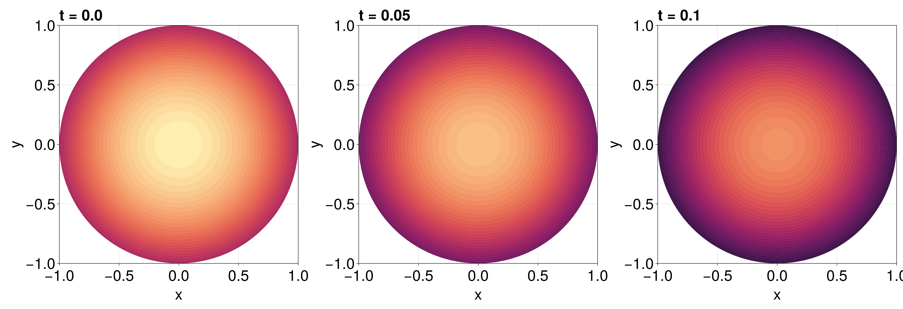

Reaction-Diffusion Equation with a Time-dependent Dirichlet Boundary Condition on a Disk
In this tutorial, we consider a reaction-diffusion equation on a disk with a boundary condition of the form $\mathrm du/\mathrm dt = u$:
\[\begin{equation*} \begin{aligned} \pdv{u(r, \theta, t)}{t} &= \div[u\grad u] + u(1-u) & 0<r<1,\,0<\theta<2\pi,\\[6pt] \dv{u(1, \theta, t)}{t} &= u(1,\theta,t) & 0<\theta<2\pi,\,t>0,\\[6pt] u(r,\theta,0) &= \sqrt{I_0(\sqrt{2}r)} & 0<r<1,\,0<\theta<2\pi, \end{aligned} \end{equation*}\]
where $I_0$ is the modified Bessel function of the first kind of order zero. For this problem the diffusion function is $D(\vb x, t, u) = u$ and the source function is $R(\vb x, t, u) = u(1-u)$, or equivalently the force function is
\[\vb q(\vb x, t, \alpha,\beta,\gamma) = \left(-\alpha(\alpha x + \beta y + \gamma), -\beta(\alpha x + \beta y + \gamma)\right)^{\mkern-1.5mu\mathsf{T}}.\]
As usual, we start by generating the mesh.
using FiniteVolumeMethod, DelaunayTriangulation, ElasticArrays
r = 1.0
circle = CircularArc((0.0, r), (0.0, r), (0.0, 0.0))
points = NTuple{2, Float64}[]
boundary_nodes = [circle]
tri = triangulate(points; boundary_nodes)
A = get_area(tri)
refine!(tri; max_area = 1e-4A)
mesh = FVMGeometry(tri)FVMGeometry with 8880 control volumes, 17502 triangles, and 26381 edgesusing CairoMakie
triplot(tri)Now we define the boundary conditions and the PDE.
using Bessels
BCs = BoundaryConditions(mesh, (x, y, t, u, p) -> u, Dudt)BoundaryConditions with 1 boundary condition with type Dudtf = (x, y) -> sqrt(besseli(0.0, sqrt(2) * sqrt(x^2 + y^2)))
D = (x, y, t, u, p) -> u
R = (x, y, t, u, p) -> u * (1 - u)
initial_condition = [f(x, y) for (x, y) in DelaunayTriangulation.each_point(tri)]
final_time = 0.10
prob = FVMProblem(mesh, BCs;
diffusion_function = D,
source_function = R,
final_time,
initial_condition)FVMProblem with 8880 nodes and time span (0.0, 0.1)We can now solve.
using OrdinaryDiffEq, LinearSolve
alg = FBDF(linsolve = UMFPACKFactorization(), autodiff = AutoFiniteDiff())
sol = solve(prob, alg, saveat = 0.01)retcode: Success
Interpolation: 1st order linear
t: 11-element Vector{Float64}:
0.0
0.01
0.02
0.03
0.04
0.05
0.06
0.07
0.08
0.09
0.1
u: 11-element Vector{Vector{Float64}}:
[1.2514323512504983, 1.2514323512504983, 1.2514323512504983, 1.2514323512504983, 1.2514323512504983, 1.2514323512504983, 1.2514323512504983, 1.2514323512504983, 1.0, 1.0732643239064652 … 1.1418895500610646, 1.0759864640747345, 1.1059360537374112, 1.1042904478816904, 1.0881826252544191, 1.086951026267742, 1.0392678506023625, 1.1031942000077788, 1.0375294899130334, 1.2101871199046064]
[1.264009692467865, 1.264009692467865, 1.264009692467865, 1.264009692467865, 1.264009692467865, 1.264009692467865, 1.264009692467865, 1.264009692467865, 1.0100470060839308, 1.0840486406747323 … 1.1533714900281984, 1.0867985289537843, 1.1170563102850468, 1.115393380434077, 1.099120923422398, 1.0978804745289195, 1.049707396848515, 1.114283297149074, 1.047960308145893, 1.2223592722044538]
[1.276714211030954, 1.276714211030954, 1.276714211030954, 1.276714211030954, 1.276714211030954, 1.276714211030954, 1.276714211030954, 1.276714211030954, 1.0201995572868992, 1.0949449626398362 … 1.1649662886520158, 1.0977232267466093, 1.1282857424172796, 1.126605584591972, 1.1101703838851884, 1.108917499493798, 1.0602595689942897, 1.1254854146149609, 1.0584940090265955, 1.234646659760771]
[1.2895472666482257, 1.2895472666482257, 1.2895472666482257, 1.2895472666482257, 1.2895472666482257, 1.2895472666482257, 1.2895472666482257, 1.2895472666482257, 1.0304554358260172, 1.1059519990603681 … 1.1766776800092662, 1.1087580353905726, 1.1396271929910682, 1.1379304240341703, 1.1213307462889894, 1.120064433526593, 1.0709179583434973, 1.1367988142931225, 1.0691346619644857, 1.247057376737823]
[1.3025086583036813, 1.3025086583036813, 1.3025086583036813, 1.3025086583036813, 1.3025086583036813, 1.3025086583036813, 1.3025086583036813, 1.3025086583036813, 1.0408144049499888, 1.117069487490339 … 1.1885049197671707, 1.1199025850869075, 1.151081154147829, 1.1493683066847702, 1.1326019885186531, 1.1313220398096695, 1.0816823007604366, 1.1482242645264058, 1.079881710822127, 1.2595900236166802]
[1.3156008604181078, 1.3156008604181078, 1.3156008604181078, 1.3156008604181078, 1.3156008604181078, 1.3156008604181078, 1.3156008604181078, 1.3156008604181078, 1.0512779138781452, 1.1282991953093415 … 1.2004506103169537, 1.131159384596717, 1.1626511816065979, 1.1609220962159628, 1.1439868586447717, 1.1426939510217298, 1.092555094257956, 1.1597656885165066, 1.0907368879465387, 1.272247670104001]
[1.3288251359796162, 1.3288251359796162, 1.3288251359796162, 1.3288251359796162, 1.3288251359796162, 1.3288251359796162, 1.3288251359796162, 1.3288251359796162, 1.0618467023176497, 1.1396420246191628 … 1.2125160799650996, 1.1425297144360163, 1.1743390902692263, 1.1725932542966568, 1.155486759331153, 1.1541820213461988, 1.1035376138659727, 1.1714250887349196, 1.1017010775582616, 1.2850318830323304]
[1.342182556706936, 1.342182556706936, 1.342182556706936, 1.342182556706936, 1.342182556706936, 1.342182556706936, 1.342182556706936, 1.342182556706936, 1.0725213979529729, 1.1510987409055364 … 1.2247024558567707, 1.1540146611969795, 1.1861464201852927, 1.1843830212377722, 1.1671028808194654, 1.1657878241653505, 1.1146309415213866, 1.1832041643949556, 1.1127750299697556, 1.297943991950037]
[1.3556743951392785, 1.3556743951392785, 1.3556743951392785, 1.3556743951392785, 1.3556743951392785, 1.3556743951392785, 1.3556743951392785, 1.3556743951392785, 1.0833027460851687, 1.1626702530922168 … 1.2370110763435085, 1.1656155150792726, 1.1980749999814866, 1.196292869761802, 1.1788366363808862, 1.1775132276845075, 1.1258363618962781, 1.1951049331114074, 1.1239596360883068, 1.3109855755385282]
[1.3693019238158526, 1.3693019238158526, 1.3693019238158526, 1.3693019238158526, 1.3693019238158526, 1.3693019238158526, 1.3693019238158526, 1.3693019238158526, 1.094191492015291, 1.174357470102957 … 1.249443279776853, 1.1773335662825608, 1.2101266582844958, 1.2083242725912375, 1.1906894392865923, 1.1893601001089917, 1.137155159662725, 1.207129412499068, 1.1352557868212, 1.3241582124792088]
[1.383065690103163, 1.383065690103163, 1.383065690103163, 1.383065690103163, 1.383065690103163, 1.383065690103163, 1.383065690103163, 1.383065690103163, 1.1051939638118982, 1.1861668202330304 … 1.2620102587768376, 1.189172355152677, 1.2222779591240003, 1.2204591809114658, 1.2026529978828713, 1.2012983020710328, 1.1485876878966825, 1.219247008844218, 1.14667315204285, 1.337484435393455]fig = Figure(fontsize = 38)
for (i, j) in zip(1:3, (1, 6, 11))
ax = Axis(fig[1, i], width = 600, height = 600,
xlabel = "x", ylabel = "y",
title = "t = $(sol.t[j])",
titlealign = :left)
tricontourf!(ax, tri, sol.u[j], levels = 1:0.01:1.4, colormap = :matter)
tightlimits!(ax)
end
resize_to_layout!(fig)
fig
Just the code
An uncommented version of this example is given below. You can view the source code for this file here.
using FiniteVolumeMethod, DelaunayTriangulation, ElasticArrays
r = 1.0
circle = CircularArc((0.0, r), (0.0, r), (0.0, 0.0))
points = NTuple{2, Float64}[]
boundary_nodes = [circle]
tri = triangulate(points; boundary_nodes)
A = get_area(tri)
refine!(tri; max_area = 1e-4A)
mesh = FVMGeometry(tri)
using CairoMakie
triplot(tri)
using Bessels
BCs = BoundaryConditions(mesh, (x, y, t, u, p) -> u, Dudt)
f = (x, y) -> sqrt(besseli(0.0, sqrt(2) * sqrt(x^2 + y^2)))
D = (x, y, t, u, p) -> u
R = (x, y, t, u, p) -> u * (1 - u)
initial_condition = [f(x, y) for (x, y) in DelaunayTriangulation.each_point(tri)]
final_time = 0.10
prob = FVMProblem(mesh, BCs;
diffusion_function = D,
source_function = R,
final_time,
initial_condition)
using OrdinaryDiffEq, LinearSolve
alg = FBDF(linsolve = UMFPACKFactorization(), autodiff = AutoFiniteDiff())
sol = solve(prob, alg, saveat = 0.01)
fig = Figure(fontsize = 38)
for (i, j) in zip(1:3, (1, 6, 11))
ax = Axis(fig[1, i], width = 600, height = 600,
xlabel = "x", ylabel = "y",
title = "t = $(sol.t[j])",
titlealign = :left)
tricontourf!(ax, tri, sol.u[j], levels = 1:0.01:1.4, colormap = :matter)
tightlimits!(ax)
end
resize_to_layout!(fig)
figThis page was generated using Literate.jl.